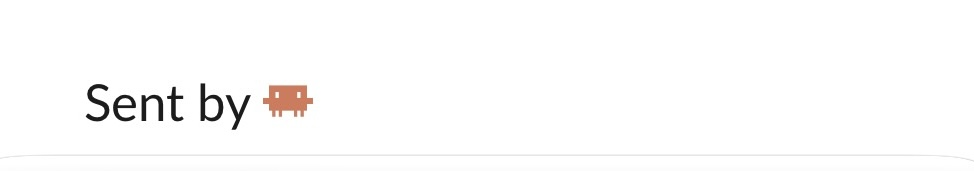

Out for Today
The Remembering saga: 1. The Posts I Write to Forget · 2. Sharing a Chat With Myself · 3. Notes Left for the Next Me · 4. Sharing a Chat With Myself Too · 5. A Fableous Story From the Past · 6. Out for Today
Every evening when I leave the office, even when the office is my kitchen table, I sign out in Slack, our workplace chat, with a message called Out for today. It lists everything I did that day. My AI writes it, because my AI was there for almost all of it. Last week a colleague told me it was too long.
Five versions of goodbye
The message is older than it looks. The first version, in April, was a recipe for my AI: go through every conversation I had with any AI that day, group what it finds by project, write bullets, put the result on my clipboard. I paste it into Slack myself, so I read it once more before it goes out, and I can take out a thing that isn't ready to be shared, or add the one that got lost. That step never changed.
The rest changed a lot. In May I gave it limits and banned ticket numbers and file names from the text. In July the formatting moved out of the AI's hands into a small program, so two evenings could never drift apart in shape. Then I added a count of how many of my changes had made it into our shared code that day, because I liked seeing it. Each version was tighter than the one before. And every evening the message was still long.
A colleague has started generating his own with the same recipe. His are just as long.
To my defense
My first reaction to "too long" was a defense, and I still think it's right: there is no filler in those messages. Every bullet is an outcome, every line is true, nothing is said twice. What I didn't have was an answer for why it felt long anyway.
The same day, a Reddit thread landed in my reading pile. It started with a project manager settling estimate arguments with Claude screenshots, and the comments moved on to the whole office. One of them summed it up: "it's like everyone has an AI pet, and they are letting their pets do the work".
Everyone has an AI pet now
That's exactly how I think of mine. Half a year ago I had an AI send two colleagues a poem in Slack, and it was a stunt. Since then it has become normal for me that my agent talks to people. The thread was the first time I saw it described as normal for everyone, and as a nuisance.
Mine is a small, eager helper that follows me from task to task and wants nothing more than to be useful. It does things on my behalf, and I'm the one who answers for them. I had already given it a name tag: every message my AI sends under my name ends with a small sign-off.

The tag is there so the person reading knows who they're talking to: not me, my pet, acting for me. Since I built it a way to send Slack messages itself, it's on every one of them.
The other side of the automation
The name tag made the audit easy. I asked the AI to search Slack for its own tag.
Eighty-six messages in two weeks.
I read all of them in one sitting, which nobody had ever done, including me. The defense held, for the answers: not one of them was unrequested. The longest, a comparison of two server setups, had been asked for twice, because the first version compared the wrong two things.
But the messages had a shape. Bold section headers. Lines starting with Cause: and Fix: and Note:. Numbered lists of options. My helper had been writing reports where I would have typed two short sentences and a link. An earlier handoff of the same comparison, to someone else, had got it right without me noticing: a few lines, and the full comparison as an attachment.
And some messages nobody had asked for. A string of them said nothing but "review running…", posted by a small automation I had set up for a colleague who, as far as I can tell, never used it. To the same person, my helper wrote German one day and English the next.
So the Reddit thread wasn't a stranger's complaint. It was the receiving end of my own setup. That was what my colleague had felt: not padding, but a helper, trying to be thorough, leaving walls on his desk every evening.
You can't answer a wall of text. You can only acknowledge it.
Teaching my pet to use my voice
I already had the rules. I write these posts under a set of voice rules my AI and I have collected over months, like this one: a detail stays when it changes what the reader knows or does next. I had written them for strangers reading a blog, and never once applied them to the people I work with.
So the fix was a short paragraph in its standing instructions. Write what I would type by hand, not a report. What I need from the reader first, then the link. No headers, no labels, and anything longer goes into the ticket, the shared record of the task, while the chat gets the summary. It also says which colleague I address in which language. And one sentence above all of it: the same rules I use for the blog, at Slack length.
The automation that posted "review running…" was switched off the same hour.
A little bit too braggy
That left the evening message, and I was torn about it. The colleague was right, it is long. It is also the thing I read on Monday morning before standup, our short team check-in, to remember what I did on Friday. The whole day is in there. I didn't want to lose that.
The way out was to admit that those are two messages wearing one coat. The team doesn't need my day. The team needs the three or four things that touched them: something they can test, something waiting for their review, a test system that now runs on a new version. Everything else, the audit I paused, the tool I built for myself, the cleanup, is mine. So the program now writes two versions from the same material. The public one is short, and has one hard rule about what gets in: it has to affect someone other than me. The private one holds the whole day, and the helper delivers it to a channel in Slack where the only member is me.
The count of my changes moved to the private one too. I like seeing it. In a message to the whole company, every evening, it was a little bit too braggy.
The private copy had a side effect I hadn't planned. Because the helper posts it by itself, it no longer depends on me pasting anything. For months, the weekend days were simply gone: the recipe ran on Saturday, put a perfectly good message on my clipboard, and nobody pasted it, because nobody signs out of an office on a Saturday. Now Saturday writes to me the way Friday does.
The messages I write to remember
I wrote once that I write these posts so I'm allowed to forget the things they're about. The evening message turned out to be the other kind of writing, the kind I keep so that on Monday I still know what Friday was.
There's an old apology at the end of long letters: I would have written a shorter one, but I didn't have the time. Short is the expensive version. So I turned it around. I write myself the long letter, because I didn't have the time. The company gets the short one, the one that took the time.